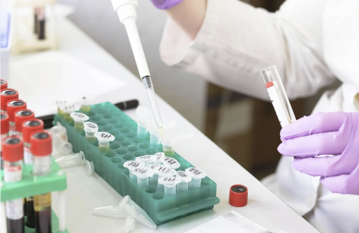

Health clarity,
delivered with care.
Micro Research Healthcare provides pathology and diagnostic services for the Pimpri-Chinchwad community.

Support for every step of your health journey.
Explore pathology and diagnostic services at Micro Research Healthcare.


Diagnostics with the patient at the center.
Micro Research Healthcare is a pathology laboratory and diagnostic center serving the Pimpri-Chinchwad community. We aim to make diagnostic support more accessible and convenient.
Our service promise
✓ Free home sample collection
✓ Quick and accurate results
✓ Expert analysis and consultation
✓ Affordable pricing
Simple from booking to report.
Get started in a few clear steps.
Book a test
Call, WhatsApp, or send a booking request.
Collection
Choose home sample collection or visit the centre.
Processing
Your sample proceeds through the diagnostic process.
Report
Receive your report and ask for consultation if needed.
Trusted in the community.
Micro Research Healthcare has a 5.0 Google rating from 9 reviews, according to the provided business listing.
“Excellent service and very professional staff. Got my results quickly and the report was very detailed.”Rahul Sharma
“Very convenient home collection service. The staff arrived on time and was extremely professional.”Priya Patel
“Best diagnostic center in the area. Their team was helpful in understanding the results clearly.”Amit Kumar
Helpful information before booking.
How can I book a home collection?
Call 7083042147 or send a WhatsApp message. The team can help confirm your request.
How long does it take to get results?
Result timing can vary by test. Contact the centre for information about your specific test.
Can I get help with an existing report?
Contact the centre on 7083042147 for assistance with an existing report.